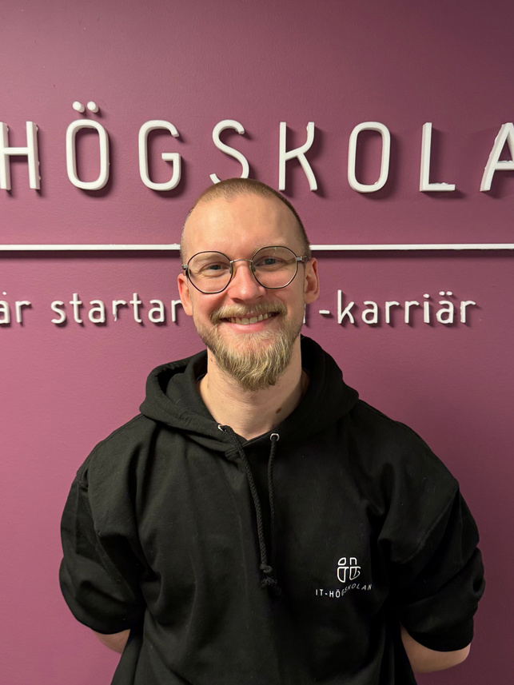

Steg 1
Jag utgick från kravlistan och frågade kunden vad som var viktigast att testa först. Tillgänglighet hade högst prioritet. Ett av testfallen jag förberedde gällde hur huvudmenyn fungerade för den som använder tangentbord.
Just nu utbildar jag mig till mjukvarutestare på IT-Högskolan i Göteborg. Jag är inne på de sista månaderna av utbildningen och gör min praktik på Sportson. Där jobbar jag bland annat med acceptanstester, automatiserar testfall och testar manuellt. Jag har också tagit fram egna verktyg för att göra mina manuella tester mer effektiva.
Tidigare jobbade jag som kock i både restaurangkök och storkök. Jag hade huvudansvaret på helgerna och lärde upp nyanställda. I köket hjälptes vi åt där det behövdes, oavsett vems uppgift det var. Det har jag tagit med mig, liksom vanan att vara noga med det jag lämnar ifrån mig. Jag valde att byta bana för att få jobba med IT och kvalitet, två områden jag brinner för.

På fritiden mekar jag gärna med min hemmaserver, 3D-printar och spelar tv-spel. Jag har mycket energi, gillar att samarbeta och drivs av att utforska nya saker och lära mig mer.
Steg 1
Jag utgick från kravlistan och frågade kunden vad som var viktigast att testa först. Tillgänglighet hade högst prioritet. Ett av testfallen jag förberedde gällde hur huvudmenyn fungerade för den som använder tangentbord.
Steg 2
Innan den första versionen var klar skrev jag ner vad som skulle krävas för att godkänna menyn. Jag skulle kunna gå framåt och bakåt mellan länkarna, se vilken länk jag stod på och öppna rätt sida med Enter.
Steg 3
När jag tabbade genom huvudmenyn försvann fokusmarkeringen på vissa länkar. Då kunde jag inte se vilken länk jag var på väg att öppna. Jag rapporterade felet till utvecklaren, som rättade det.
Steg 4
Efter rättningen återtestade jag menyn med tangentbord. Fokusmarkeringen syntes på menyvalen och återtestet blev godkänt.
För att kontrollera textkontrast behövde jag snabbt få fram färger och kontrastvärde. Tillägget samlar uppgifterna för markerad text i samma ruta.
Firefox-tillägg · JavaScript, HTML och CSS
Jag återkommer till samma zoomnivåer när jag testar sidans layout. Sparade profiler gör det enklare att upprepa kontrollerna med samma inställningar.
Firefox-tillägg · JavaScript, HTML och CSS
Reglaget ändrar textkontrasten på sidan. Tillägget visar värdet för den här texten mot bakgrunden.
Kunde inte ladda kontrollrutan. Ladda om sidan och försök igen.
Innan jag började med testning arbetade jag i restaurangkök och på sjukhus i Norge.
Jag tar fram acceptanstester utifrån kravlistor, testar tillgänglighet på webbplatser och automatiserar testfall.
IT-Högskolan, Göteborg · Planerad examen 29 januari 2027
Kock · Lörenskog, Norge
Ansvarade för att lära upp nya medarbetare. Teamledare på helger och vid behov på vardagar.
Kock · Oslo, Norge
Arbetade med lunchservering, öppning och förberedelser inför kvällsservice.
Köksassistent · Lörenskog, Norge
Tillgänglig från
Söker jobb i Göteborgsregionen
Språk: svenska, norska och engelska
Right-click selected text and choose Check Contrast.
Contrast is based on CSS. Overlapping content may require a manual check.